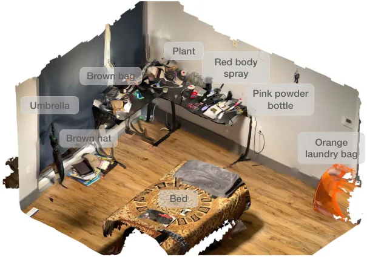
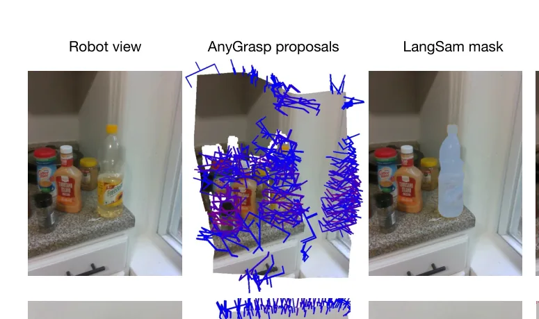
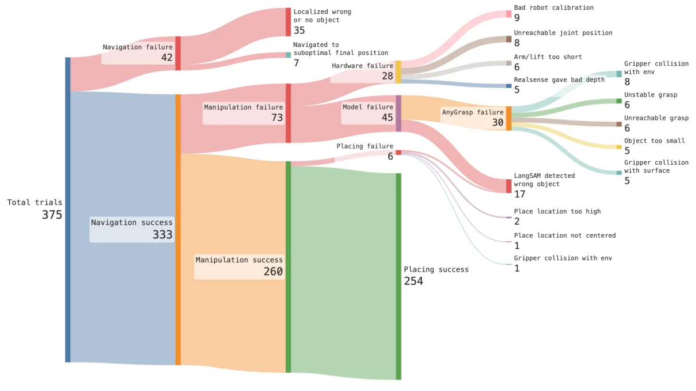

💡速记层 · 思想 / 逻辑 / 方法
默认读完就走的一层——只讲思想、逻辑、方法；效果只作验证。要核对原文/钻细节再看下面的「深读层」。
- VLM 识别、导航、抓取模型已各自成熟，但把它们直接组合仍在 NeurIPS OVMM 竞赛中只有 33% 成功率——各模块误差相乘后系统崩溃。
- 原因：各模块的接口假设彼此不匹配——VLM 给出的导航目标可能不可达，抓取模型给出的姿态可能被机器人关节限位卡死，语言查询的措辞差一个词结果天差地别。
- 解法不是重新训练模型，而是"systems-first approach"：为每个模块设计正确的输入格式、输出过滤规则、以及鲁棒的模块间转换启发式。
- 以 AnyGrasp 为例：原始输出含数百个抓取候选，用 Lang-SAM 掩码过滤 + 水平抓取倾向启发式，能大幅提升真实可执行性。
- 结果：同样的开放模型组合，通过正确的系统工程，在真实家庭中实现 58.5% 零样本成功率，整洁条件下 82.4%。
10 个未见真实家庭中零样本 58.5%，整洁环境 82.4%，是 NeurIPS 2023 OVMM 竞赛冠军的近 1.8×。消融实验表明 AnyGrasp 比次优候选高出 近 50%（相对幅度），VoxelMap 的低方差优于 CLIP-Fields/USA-Net——组件选择对全系统影响显著。
想看具体数字（点开）
- 375 次总试验，导航成功 333/375 (88.8%)，操作成功 260/375，放置成功 254/375。
- 自然环境 (Cluttered) 58.5%，一次清理后 71%，二次清理后 82.4%。
- 最主要失败：语义记忆定位错误 35 次，AnyGrasp 失败 30 次，LangSAM 识别错目标 17 次，硬件标定问题 9 次。
- 另在 Pittsburgh (PA) 和 Fremont (CA) 两个更大/更杂乱的家庭完成了成功复现。
诚实标注：OK-Robot 不是 VLA，没有端到端学习，不做 locomotion。 它对两个 Track 的价值定位如下：
Track A（移动操作 VLA）：非VLA系统对照线 / 工程基线。 理解「开放词表移动操作」的难点在哪里（模块误差相乘、语言查询敏感性、抓取模型局限）有助于判断 VLA 相对系统集成方案的增量价值。不需要深读细节，速记层已足够。
Track B（足式算法）：不相关——本文不涉及 locomotion 或任何底层控制。
◆核心观点 · 证据
每条 = 中文论点 + 📍页/节 + 🔤逐字原文(Ctrl-F 锚点) + 🀄译文 + 💡解读。
Despite these advancements, general-purpose applications of robotics still lag behind, even though they rely on these fundamental capabilities of recognition, navigation, and grasping.
the recent NeurIPS 2023 challenge for open-vocabulary mobile manipulation (OVMM) [22] registered a success rate of 33% for the winning solution [23].
Unfortunately, there isn't a single challenge that makes this problem hard. Instead, inaccuracies in different components compound and together results in an overall drop.
making progress on this problem requires a careful and nuanced framework that both integrates VLMs and robotics primitives, while being flexible enough to incorporate newer models as they are developed by the VLM and robotics community.

From arriving into a completely novel environment to start operating autonomously in it, our system takes under 10 minutes on average to complete the first pick-and-drop task.

VoxelMap is built by back-projecting the object masks in real-world coordinates using the depth image and the pose collected by the camera. This process giving us a point cloud where each point has an associated CLIP semantic vector. Then, we voxelize the point cloud to a 5 cm resolution. For each voxel, we calculate the detector-confidence weighted average for the CLIP embeddings that belong to that voxel.

Given a grasp score S and the angle between the grasp normal and floor normal θ, the new heuristic score is S −(θ4/10). This heuristic balances high graspness scores with finding flat, horizontal grasps. We prefer horizontal grasps because they are robust to small calibration errors on the robot, while vertical grasps needs better hand-eye calibration to be successful.
AnyGrasp clearly outperforms other grasping methods, performing almost 50% better in a relative scale over the next best candidate, top-down grasp. However, the fact that a heuristic-based algorithm, top-down grasp from HomeRobot [25] beats the open-source AnyGrasp baseline and Contact-GraspNet shows that building a truly general-purpose grasping model remains difficult.

The three leading causes of failures are failing to retrieve the right object to navigate to from the semantic memory (9.3%), getting a difficult pose from the manipulation module (8.0%), and robot hardware difficulties (7.5%).
as we clean up the environment and remove the ambiguous objects, the navigation accuracy goes up, and the total error rate goes down from 15% to 12% and finally all the way down to 4%. Similarly, as we clean up clutters from the environment, we find that the manipulation accuracy also improves and the error rates decrease from 25% to 16% and finally 13%.
One of the primary reasons our OK-Robot can fail is when a natural language query given by the user doesn't retrieve the intended object from the semantic memory. In Figure 7 we show how some queries may fail while semantically very similar but slightly modified wording of the same query might succeed. Generally, this has been the case for scenes where there are multiple visually or semantically similar objects.
⎘开源状态
论文随正式发布即开源代码和视频，托管在项目网站。
- 代码
- 已开源 ok-robot.github.io — 完整模块代码（VoxelMap、抓取过滤、导航栈）
- 权重
- 部分开放 依赖 AnyGrasp（商业版比开源版强得多）；CLIP、OWL-ViT、SAM 权重均公开
- 数据
- 未公开 实验在 10 个私人家庭进行，无数据集释出
实验中使用的是 AnyGrasp 的完整商业版本，与公开的开源基线（Open Graspness）存在明显性能差异。消融实验中 top-down 启发式甚至能击败开源版 AnyGrasp——这意味着完全复现需要访问商业版 AnyGrasp。
We published our code and robot videos on https://ok-robot.github.io to encourage further investigation.
⚖批判 · 评级
清晰诚实地回答了"开放词表移动操作为什么难"这个问题，并给出了可量化的系统分析。故障模式 Sankey 图（Figure 4）是难得的真实系统诊断，对后续工作有直接参考价值。1.8× OVMM 提升证明工程细节的价值不亚于模型创新。对于想了解"VLA 的对照组长什么样"的读者，这是不可多得的参照。
① 依赖商业 AnyGrasp：关键组件不完全开放，限制了完整复现。② 静态地图：扫描后地图不更新，物体移动即失效，适用范围受限于相对静态的家庭。③ 无闭环检测：单次失败即级联失败，系统脆弱性与模块成功率的乘积效应使整体成功率低于每个模块的单独表现（各模块 ~80-90%，整体仅 58.5%）。④ 平台局限：Hello Robot Stretch 的 1kg 有效载荷、有限伸展范围、轮子越障能力弱——很多失败是平台固有限制，而非算法问题。⑤ 自选实验对象：试验对象由研究者从环境中选择，会排除明显不可抓取的对象，这可能使报告的成功率偏乐观。
评级：Valuable 对 Track A 的价值是作为系统基线和工程参考，不是方法论贡献——读速记层即可，无需深读证据。